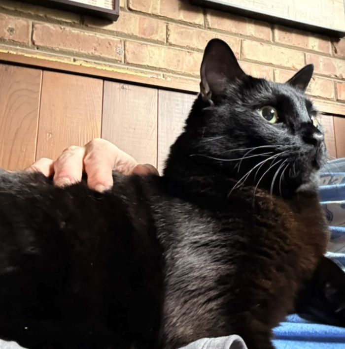

PetWatch,
reconsidered.
The timed version of this exercise showed how much I could make. This version asks the harder question: what should I have made? It was built outside the original four-hour timebox, on purpose, and it says so, because reconsidering your own shipped answer is part of product judgment.

I did this twice.
The first version of this exercise was a timed, four-hour take-home for Goji Labs. I finished it inside the constraint and I stand behind it: it read the brief closely, found a real gap, and shipped a working prototype. It is linked above, unedited.
It kept bothering me anyway. Reading it back the next day, two things stood out. The changes I made in the final stretch of the timebox were the least screened thinking in the submission: real decisions, shipped with the thinnest explanations, because the clock ran out before the reasoning could be written down. An unexplained decision reads as a guess even when it isn’t, and those closing calls deserved better reasons than the last twenty minutes could give them. And the whole submission leaned toward demonstrating how much I could produce: five documents, four pages, the same six insights fanned out across all of them. Volume standing in for judgment.
The first attempt did find something true. The brief’s user stories let an owner write a schedule and a watcher read it, and nothing was ever marked done. I called it the completion gap: as specified, PetWatch was a schedule viewer, not a trust instrument. That insight survives here fully intact.
The first attempt answered the owner’s question: did someone handle it? It never asked the watcher’s question: can I handle this?
That second question is what this version is about. Everything below was built outside the original timebox, deliberately, with current tools, and this document never pretends otherwise. If a constraint taught me what I could make in four hours, removing it let me find out what I actually think.
Hex.
Hexadecimal is a black cat. Hex, to everyone. His owner Mikel is traveling for five days, and a trusted friend, Sam, is house-sitting. Hex takes prescribed insulin at 7:15, morning and evening. Sam has given that injection exactly once, on Sunday, with Mikel standing at their elbow.
Sam’s problem at 7:15 PM on Thursday is not “I might forget.” A phone alarm solves forgetting. Sam’s problem is: this is my friend’s animal, I’ve done this once, I don’t want to hurt him, and I want to know I’m doing it right.
Mikel, meanwhile, owns a hundred small pieces of practical knowledge that make Hex’s routine easy. The one that matters at 7:15: Hex will do anything for a particular lickable treat, and while he’s occupied with it, the injection is a non-event. That single sentence is worth more to Sam at 7:15 than a page of instructions.
A schedule transfers information. This product needs to transfer the owner’s context and confidence, at the moment they’re useful.
I want to be precise about the claim, because the imprecise version is unsafe. An app cannot transfer the skill of injecting insulin, and a first-ever injection performed by a novice from phone instructions is a scenario no responsible product invites. PetWatch assumes the procedure was demonstrated in person, by the owner or the vet, at least once. What the product does is support recall, timing, and calm: the demonstrated routine, re-presented one step at a time, in the owner’s and vet’s own words, exactly when it’s needed. PetWatch organizes trusted knowledge. It never generates care advice. That boundary is structural in everything that follows.
This is also where the business problem lives, wearing its product costume. PetWatch only works if an owner trusts it enough to route a friend’s care of their animal through it, and if the friend closes the stay feeling capable rather than surveilled. Confidence on one side and reassurance on the other is the retention loop. Every design decision below is downstream of those two feelings.
Two kinds of knowing.
My first instinct, both times, was to model everything as scheduled tasks. Then I remembered the door.
Hex is a runner. He is quick and quiet around exterior doors, and he goes for the gap the second it opens. Mikel knows this the way you know your own phone number. Sam might remember it on day one and forget it by Thursday, and it does not belong to 7:15 AM, or 2:00 PM, or any slot a scheduler could hold. It matters continuously.
Some knowledge has a time. Some knowledge has a door.
A scheduler can only hold the first kind, and that is exactly how the second kind gets lost: not deleted, just never given anywhere to live. Once the split is said out loud, the product structure stops being a choice and starts being a transcription. PetWatch carries two classes of knowledge, and they behave differently:
- Care Moments are temporal: things requiring action at a time. Medication, meals, water, walks. They have states, they become due, they complete, and completion is attributed.
- Always-Know is ambient: persistent situational knowledge. RUNNER. Where he hides. Which door stays shut. What his yes is. It never becomes due, never completes, and, critically, never interrupts.
The tempting move is to make RUNNER loud: a banner, a recurring notification, an alert when a walk is scheduled. Every one of those trains ignoring. Interruption habituates; quiet persistence builds familiarity. So RUNNER lives as a small chip on Hex’s header on every screen, the Know Hex panel sits one tap away at all times, and the panel arrives expanded at session boundaries: first open of the day, the start of any guided care, and once in a walkthrough before the stay begins. The design accepts what it can’t know: without sensors, no app knows when Sam approaches the door. Familiarity is the mechanism, not interception, and whether familiarity actually forms by Thursday is a research question, not a claim.
One more thing belongs in this chapter, because the brief calls PetWatch an AI-enabled product and this is the only place I think AI belongs in it. The product’s real failure mode is an empty care profile: owners will not do data entry, and every screen above is worthless if Mikel never wrote anything down. So the one AI feature I would build is owner-side capture: Mikel talks about Hex for three minutes, the way he’d brief a friend at the door, and AI drafts the Care Moments and Always-Know cards for him to review, correct, and approve. AI structures; the owner authorizes; nothing AI-touched ever reaches Sam unreviewed. And the deliberate negative: no assistant speaks to the watcher at 7:15. The moment of care runs on the owner’s words or not at all.
When life interrupts.
A care moment becomes due while Sam is in the shower, on a call, cooking, or finally relaxing. A system that treats that as deviance is modeling a task queue, not a person. So when 7:15 arrives, the product asks for one of two honest answers: start, or not this second.
Snooze is the load-bearing interaction, and it is not failure. People don’t miss care moments because they don’t care; they miss them because they were holding something else. Snooze is the interface admitting that. It means: I saw this. I can’t do it right now. Don’t let me forget. The system takes the open loop and visibly holds it, which is precisely what an anxious brain cannot stop doing for itself. Sam keeps agency; Mikel’s moment never silently disappears; both people get something from the same tap.
Two things I explicitly rejected here. First, the ticking countdown. My own working notes for this redo asked for one: “Hex’s insulin is in 04:32.” I built the time model and tested the pattern against the product’s one non-negotiable feeling, and it failed for a reason that fits in six words: a countdown counts down to stress. It manufactures exactly the anxiety the product exists to remove, and it’s an assistive-technology hazard besides. Time in PetWatch is coarse at a distance (“at 7:15, in about 90 minutes”), gently precise when close (“in about 5 minutes”), and plain when it matters (“Now”). State changes are announced once; nothing ticks.
Second, the MISSED state. Past-due in the watcher’s interface is simply due, 20 minutes ago, in warm amber, in words. A state named MISSED is a verdict, and verdicts belong to the owner’s escalation preferences, not to a nervous friend at 7:35. What happens past a threshold is Mikel’s call to configure, and the default is the only escalation that requires no medical knowledge at all: contact the owner. No snooze limits are invented for the same reason. The medically correct window for insulin is not a product manager’s decision, so the product refuses to fake one.
The weight of the moment.
Refreshing a water bowl and injecting insulin are both “tasks,” and giving them the same interface is a category error in either direction. Water gets one tap. Insulin gets guided care: a focused mode that presents Mikel’s and the vet’s instructions one meaningful step at a time, starting with the treat, because the treat is what makes everything after it easy.
Who decides which moments are heavy? Mikel does. Depth is owner-authored, marked when a moment is created, because the person who knows Hex and knows Sam is standing right there. I considered inferring it, consequence times unfamiliarity as a formula, and rejected it: it’s a sound design principle and a dishonest algorithm. Principles guide people; they shouldn’t cosplay as math.
Notice what step two is: a stop point, written by the owner, inside the flow. Guided care builds in permission to not proceed. And beneath every step, always, the same quiet exit: Something isn’t right. It opens Mikel, the vet, and the emergency clinic, it never resets progress, and its headline says the only thing an anxious person needs to hear: asking is the right move. In the state model, asking for help and then finishing is a success path, because in real caregiving, it is.
Then it’s done, and the product gets quiet on purpose. No confetti, no streak, no points. This is not Duolingo for cat insulin, and the reasoning is simpler than restraint for its own sake: relief is quiet by definition. Celebration would ask Sam to perform a second feeling on top of the one they already have. The completion screen is designed as the emotional peak of the whole product precisely by being still:
All taken care of.
That last italic line is the whole product in one sentence. One completion event answers two different anxieties: Sam’s I handled it and Mikel’s someone handled it. Mikel’s view, three timezones away, says “Hex is all good,” lists outcomes, and shows the last care line. What it never shows: snoozes, step timings, hesitation, or anything resembling a live feed. Granularity, not visibility, is what turns reassurance into surveillance: a summary says it went fine, while a feed asks you to keep checking. Same data, opposite feelings. So the granularity is capped structurally, and Sam is told exactly what Mikel can see. Whether that boundary actually produces trust on both sides is the most important open question in chapter 07, and I’m treating it as a hypothesis, not a fact.
Where the interface ends.
This time I wrote the domain model before any interface existed: a care moment, an append-only event log, and a clock you can hand it. Status is never stored; it’s derived from the log and the time. Fourteen unit tests state the product rules from the last four chapters in executable form, and building that first, before pixels, is the cheapest place I know to be wrong.
The log is one primitive doing four jobs. It gives attribution for free. It makes the double-completion guard trivial: a second “done” never writes a second completion, it surfaces “Already done. Mikel, 7:05 AM,” which for medication is the difference between a UI nicety and a double-dosed cat. It produces Mikel’s outcomes-only view by simple projection, and the granularity cap from chapter 05 falls out of which event types the projection reads. And if two watchers ever exist, an append-only log merges; a status column fights. The domain supports multiple watchers today, and the interface deliberately doesn’t show it, because Hex has one sitter and speculative UI is how scope dies.
Implementation talked back twice, which is exactly why it happened this early. First: my initial state derivation trapped a moment in NEEDS HELP even after Sam picked the routine back up. A failing test asked the product question directly, does resuming care resolve the help state?, and the answer, yes, resuming is the resolution, is now both a line of code and a line in chapter 05. Second: the clock. Whose timezone owns a care moment sounds like an argument until you notice that Hex never boards a plane. The schedule belongs to the animal, so it runs on the animal’s clock: care moments anchor to the household’s time, never the viewer’s, and Mikel crossing three timezones cannot move 7:15 insulin. His view says so in its header. That one is cheap to state now and brutal to retrofit later, which is why it’s decided now.
Everything else stays deliberately unbuilt: no backend, no push notifications, no sync engine, no auth, and the full list lives in a NOT-BUILDING file in the repository, which agents and humans both read before touching code. The prototype runs on the one piece of infrastructure an evaluator actually needs: a controllable clock. Time is the product’s main character, so the demo hands you time itself, and the whole system, due, snooze, guided care, help, completion, both views, can be experienced in about three minutes. Built to be walked through live in a sixty-minute panel.
What I still don’t know.
These are the questions I refuse to “solve” at a desk. Each names a belief this design is currently running on, and what would change my mind.
What AI actually changed.
I used AI agents throughout, and the honest summary is not “it built things fast,” although it did. It’s that the distance between having a thought and testing it collapsed, which changed where my time went. Less of it producing, more of it choosing. The pattern that mattered most: sweep wide with cheap agents, reach conclusions in minutes instead of afternoons, and spend the recovered time asking whether the conclusion is actually right.
| Where | What the sweep did | What it surfaced, and what I decided |
|---|---|---|
| Repo research | One research agent read the entire v1 submission, every page, document, build script, and the prototype’s code, in minutes. | Found every blockage I’d have needed an afternoon to admit: the same six insights fanned across eight artifacts; a “two directions compared” page whose second direction never existed; the public share build stale by a whole section. The sweep found them; deciding they meant “v1 optimized for volume” was mine. |
| Brief pattern pass | Classified every user story in the original brief by voice and verb. | Every verb is owner-side logistics; no story speaks as the watcher. Pattern recognition made the silence visible fast; the reframe, that the silence is the product, is a judgment call no sweep makes. |
| Psychology check | Rapid recall of candidate frameworks: SDT, prospective memory, Zeigarnik, alarm fatigue, peak-end, monitoring transparency. | Tested each against actual screens and kept the ones that held weight. The speed let me discard four frameworks in the time citing them all would have taken. |
| Implementation spikes | State machine and its tests written before any UI existed. | Two product blockages surfaced inside the first hour, help-then-resume and household-clock ownership, while both were one-line decisions instead of migration projects. |
| Production | Cheaper models handled repo sweeps and QA passes; the most capable one was reserved for judgment: this writing, the decisions, the review. | Model-mixing is just the budget version of the whole argument: spend capability where judgment lives, spend volume where it doesn’t. |
And where AI was wrong, because that log matters more than the wins: my own AI-assisted working notes specified a ticking countdown, and it took deliberately testing the pattern against the calm thesis to kill it. Early drafts included a MISSED state, plausible, statistically likely, and a verdict the product has no right to issue. Generated copy kept drifting toward compliance language, “verify,” “confirm,” the same drift v1 logged two weeks ago, and it got rewritten to human speech every time. The failure mode is consistent: AI produces the statistically likely design, and the statistically likely design is confidently generic. The job it cannot do is the one this exercise scores: distinguishing plausible from appropriate.
Faster building didn’t make me make more. It bought more chances to ask “is this actually right?” while the answer was still cheap.
Order of work, for the record: domain model first, the watcher’s evening second, the owner’s glance third, this document last. Deliberately absent, beyond the NOT-BUILDING list: auth, pet management, invitations, calendars, notifications, backends. The brief asks for them; a hiring panel doesn’t need to watch me draw a login screen, and Hex doesn’t need one either.